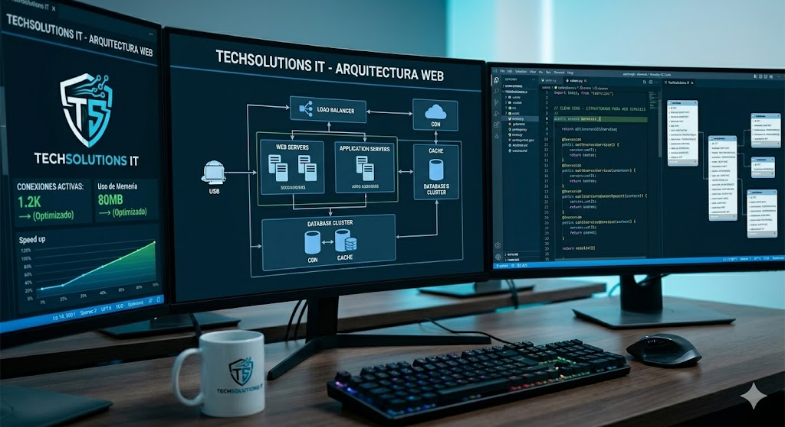

Optimización de Software
Mejoramos el rendimiento y la estabilidad de tus sistemas críticos de software empresariales. Limpieza profunda de SO y configuración avanzada.
Saber Mas
Mejoramos el rendimiento y la estabilidad de tus sistemas críticos de software empresariales. Limpieza profunda de SO y configuración avanzada.
Saber Mas
Creamos soluciones y aplicaciones web personalizadas adaptadas a las necesidades específicas de tu negocio, enfocadas en escalabilidad y seguridad.
Saber MasMonitoreo proactivo continuo de tu red y sistemas, con asistencia técnica inmediata ante cualquier incidencia desde nuestro Centro de Operaciones.
Saber MasGestión eficiente de infraestructura en la nube, servidores y bases de datos para garantizar la alta disponibilidad y seguridad de tu información.
Saber Mas